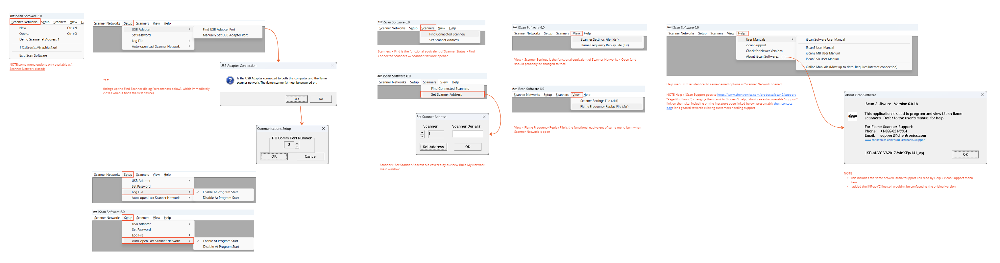
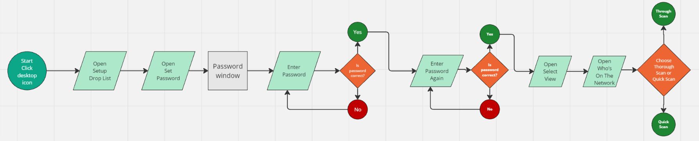
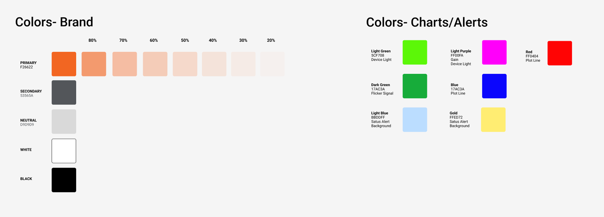
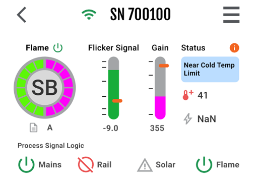
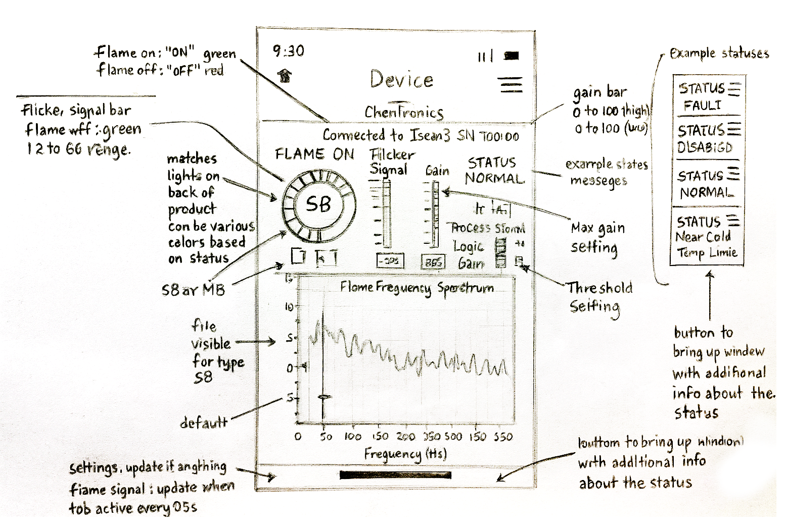
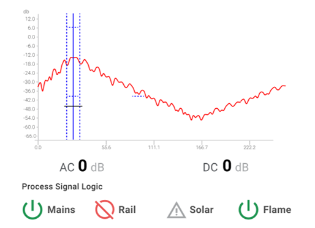
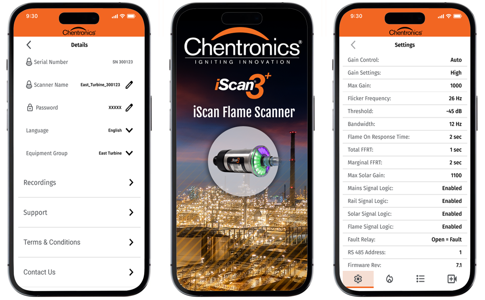
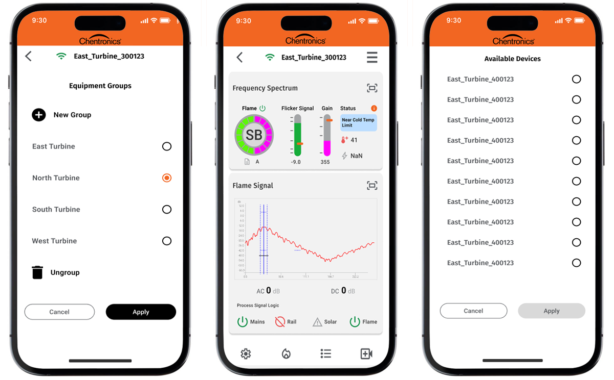
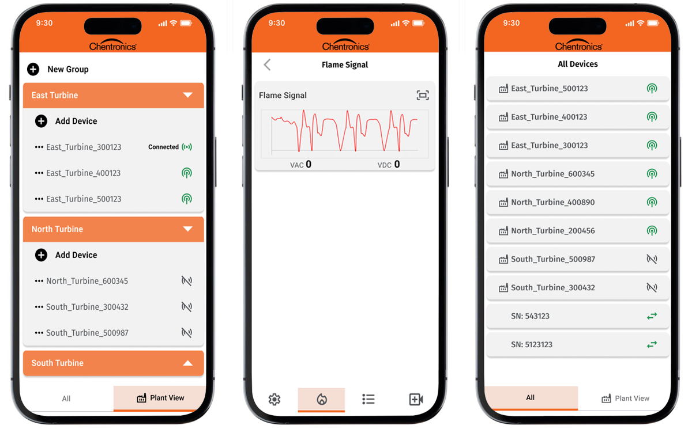

Field technicians diagnosing industrial flame sensors with manual checks, inconsistent logs, and trial-and-error.
Chentronics, a leader in industrial flame detection, needed a mobile application to support technicians diagnosing sensor health in the field. With the iScan® 3+ launch approaching and competitors already offering mobile tools, the absence of a mobile diagnostic experience created operational risk, competitive pressure, and workflow friction.
Complex hardware signals needed to be translated into clear, actionable diagnostic steps — in real-time, in the field, under pressure.
Technicians were relying on manual checks, inconsistent hardware logs, and trial-and-error to diagnose flame sensor health. Offline signals were buried in hardware readouts, troubleshooting steps varied across technicians, and there was no clear visibility into sensor health during high-risk industrial operations.
Led the UX effort to translate complex hardware behavior into a clear, actionable diagnostic experience.
Five phases — from hardware audit to live prototype validation with real sensor signals.



Shared language across design & engineering
Rather than designing around assumed states, I built a shared fault taxonomy with firmware engineers — ensuring every UI state mapped directly to a real hardware condition. No guesswork, no abstraction gaps.
Stayed in until it shipped correctly
Uncovered layout inconsistencies during integration and refined interactions based on real-world feedback from engineering test sessions — not just design reviews.
Designed for the full device spectrum — not just one phone
React Native's single codebase meant layouts had to hold across iOS and Android, across small and large screen sizes, and across different OS rendering behaviors. Every component was specified for the smallest supported screen first, then validated on larger devices — a genuine mobile-first approach, not a desktop layout squeezed down.
Designed for how and where the app actually gets used
Glove-friendly tap targets (minimum 48px), high-contrast states for outdoor lighting, single-hand navigation patterns, and reduced cognitive load for time-pressured decisions. The screen-size work was inseparable from the environmental constraints — both shaped every layout decision.
A hardware-integrated prototype that validated the full diagnostic flow against live sensor signals.

"Testing against real hardware signals — not simulated data — is what made the difference between a prototype that looked right and one that actually worked."
A scalable diagnostic framework — and measurably faster fault resolution in the field.
The work









Get hardware test rigs in front of the design earlier. The most valuable feedback came when we tested the prototype against real sensor signals — but that happened late in the process. Earlier hardware-integrated testing would have caught state-transition edge cases before they became engineering rework. When hardware is the source of truth, it needs to be in the room from day one.